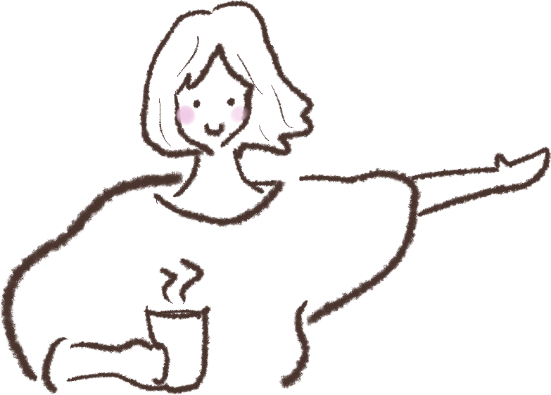
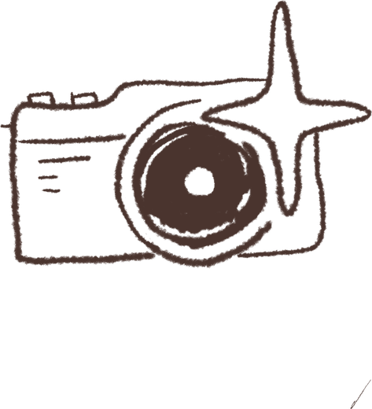
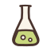
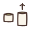
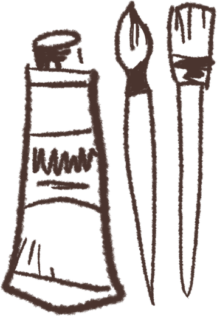
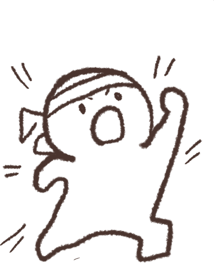
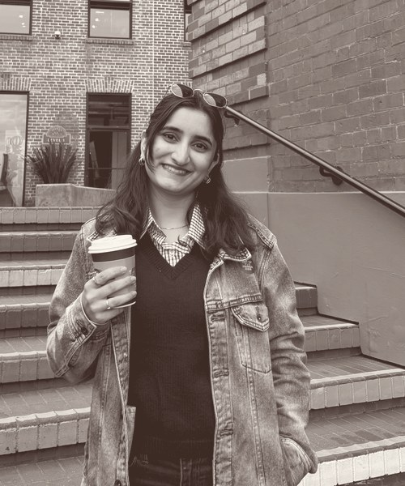

KUVIA AI, Pathology Product
Catching bad slide scans before the AI sees them, and giving pathologists one place to work with the results.
Product · Program · Supply Chain


Where I've been
Aug 2020 to May 2024
Instrumentation at the core, with automation, data science and biomedical engineering as the parts that stuck. Outside the classroom:

Built the club from zero, and learnt early that most of running anything is getting the right people into the same room.

Ran the club's social media and put together a Finance and Economics 101 series, turning the jargon into something a first year could actually follow.
Jul 2023 to Jan 2024
Wrote technical requirements and validation documentation for 15 industrial automation projects, and standardized PLC templates across a 10 engineer team, which cut close to three days off each project.
Jul 2024 to Jul 2025
A legacy building energy monitoring dashboard, migrated onto a new product. Hands on through testing and every round of iteration, working across teams to get it over the line, while keeping the processes documented, Confluence current, and small Kaizen improvements going along the way.
Aug 2025 to May 2027 (expected)
Supply chain, operations and technical product management, at a 4.0. The engineering lens picked up a business one here: how decisions get weighed, argued for and made. Alongside the coursework:
Jan 2026 to May 2026
Owned discovery and requirements for two of KUVIA's product problems: catching bad slide scans early, and a results platform for their pathologists.
Aug 2026 to May 2027
Leading 12 students building GeneChat, an LLM tutor for genetics education that picked up a 2026 American Society of Human Genetics award.
Running a project team inside Purdue's Women in Consulting Club, on the same footing as the client work: scope, owners and a deadline people agree on.
May 2026 to Aug 2026
Built the critical path and constraint plan templates the team planned against, which meant plenty of time with stakeholders across functions getting them right. A crash course in the semiconductor industry and in how a manufacturing floor actually runs, with supply chain concepts put to work in real time rather than on paper.


Selected work
Catching bad slide scans before the AI sees them, and giving pathologists one place to work with the results.
Where a capped production rate and a long supplier network tie up billions in working capital, and what it would take to unlock it.
A Spotify login, your real top tracks, and Claude writing you a mock medical report about your taste in music.
Graduate project · Purdue University
The 737 MAX was producing well under demand, with cost and working capital locked up across a supplier network long enough that no single team could see all of it at once.
Mapped the supply chain end to end to find where sourcing and cost reduction were genuinely available, not just assumed, and built the improvement strategy around those points.
A strategy projecting 6 billion dollars in working capital reduction, with a KPI roadmap toward 52 units a month.
Product Consultant · Bayer and KUVIA AI
KUVIA is an Argentine healthtech startup whose AI reads digitized biopsy slides and predicts cancer biomarkers in minutes. Two gaps stood between the model and clinical use: bad scans were slipping into the pipeline and getting caught late, and pathologists had no single place to review results. The question was what each fix had to be for people to actually use it.
Owned discovery and requirements across both workstreams inside a six person cross functional team: interviews with 12 oncology stakeholders, a 21 billion dollar market sizing and a benchmark of 8 competitors, all rolled into one product requirements document. When scope kept reopening, every decision went back to that document.
A requirements document covering 5 features across the two workstreams. From it came automated slide quality control that catches around 15 percent more unusable whole slide images before they reach the model, and a results platform now in pathologists' hands, with their usage and feedback setting the next round of priorities.
Side project · Built and shipped
Spotify Wrapped only comes once a year, and it's always nice to you. Meanwhile everyone has opinions about their friends' music taste, and nobody says them out loud. Aux Cord Diagnosis says it for you, any time: log in with Spotify, and it reads your top tracks and writes a fake medical report on what's wrong with your taste, roasting you along the way.
Spotify OAuth pulls your real top tracks and audio features, then a prompt sends that pattern to Claude and gets structured JSON back, which the page renders as a mock medical chart. Serverless functions on Vercel, with both API keys held server side so nothing sensitive reaches the browser.
Live and working. The interesting part turned out to be the prompt, not the plumbing: early versions just read your artists back to you, which was boring, so the model is now constrained to infer the vibe from the pattern and never name a track. That single rule is what made it funny.

Values

Get in touch
